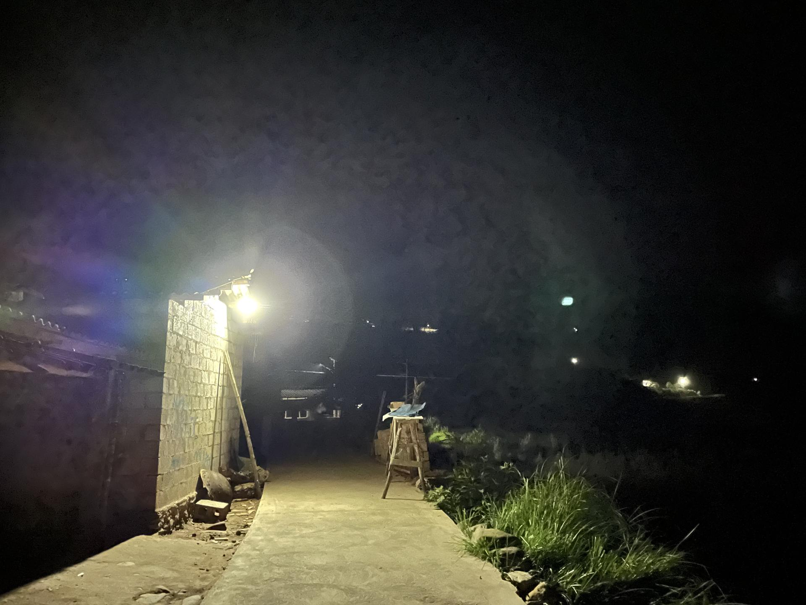

太阳能防兽灯
太阳能防兽灯在一定程度上可以缓解人象冲突。我们设计的太阳能防兽灯具有两种功能——闪烁和照明。

图注：我们安装的太阳能防兽灯
一方面，太阳能防兽灯在白天吸收太阳能，晚上会发出闪烁的光。这会让野象觉得此处有人类生活而不靠近，因此可以进一步帮助村民抵御野象的侵扰，减少野象造成的人员伤亡。
另一方面，这款太阳能防兽灯具有照明的功能。在大树脚村，由于很多地方缺少路灯，村民晚上可能会因为看不见而突然“偶遇”大象，这会导致他们受伤。通过这款太阳能防兽灯，村民可以在需要的时候把防兽灯调整为照明模式，从而在夜晚避免人象冲突。

图注：安装好的防兽灯
2021年，中南屋希望为野象最经常“光顾”的100户人家安装太阳能防兽灯。


图注：安装防兽灯

图注：夜晚的效果